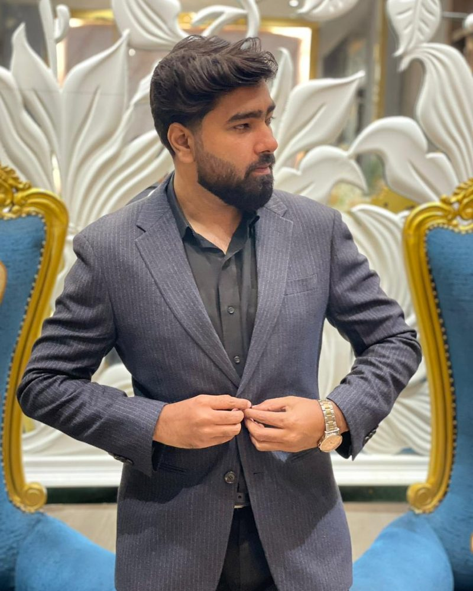

Azure App Service hosting
Web apps and APIs on Azure App Service and Function Apps, with deployment slots, custom domains, SSL, Key Vault secrets and Application Insights.
- App Service
- Function Apps
- Key Vault
- App Insights
Building on Azure and AWS since 2024
Cloud & DevOps Engineer
Nearly three years designing, automating and running production cloud platforms: app hosting on Azure App Service, Kubernetes on AKS and EKS, Terraform for every environment, and pipelines that ship without downtime.

I'm a Cloud & DevOps Engineer based in Karachi. I take infrastructure from an empty subscription to a platform that scales, deploys itself and tells you when something is wrong.
Over nearly three years I have run AWS and Azure environments from development through production, moved workloads onto Kubernetes, automated whole environments with Terraform and built CI/CD for more than 30 production services. I work independently, own operations end to end, and explain infrastructure clearly to engineers and non-technical stakeholders alike.
I'm security-minded by default: no public IPs on applications, private databases, secrets in Key Vault, and scans in every pipeline, following ISO 27001 and NIST practices.
Infrastructure I have designed, deployed and kept running in production on Azure and AWS.
Web apps and APIs on Azure App Service and Function Apps, with deployment slots, custom domains, SSL, Key Vault secrets and Application Insights.
Production clusters on AKS and Amazon EKS with Helm charts, GitOps through ArgoCD, and canary or blue-green releases with rollback in minutes.
Reusable Terraform modules for whole environments, from networking to databases, including a second region built as an exact copy.
Multi-stage YAML pipelines with approval gates for .NET, Node.js and Python services, from commit to production without downtime.
VPC networking, EC2 with auto scaling and load balancers, RDS, S3 and Lambda, set up with least-privilege IAM from the start.
No public IPs on apps, private databases, secrets in Key Vault, RBAC, and Trivy, SonarQube and OWASP ZAP scans built into every pipeline.
Dashboards and alerts that catch problems before users do, plus on-call response, root-cause analysis and capacity reports.
Event-driven microservices on Azure Service Bus queues and topics, and the backend APIs that connect them.
Cloudflare DNS, caching and page rules, SSL/TLS, and transactional email through SendGrid or Amazon SES.
Every change goes through the same automated path: built, scanned, provisioned, deployed and verified before it reaches users.
The tools I work with across cloud, automation, containers and security.
Nearly three years running production infrastructure on Azure and AWS.
Al Nafi International College
Al Nafi Cloud
Bachelor's equivalent. Al Nafi International College, Karachi.
Govt. Degree College North Karachi.
Tell me what you are running and what you need. Email or WhatsApp is the quickest way to reach me.